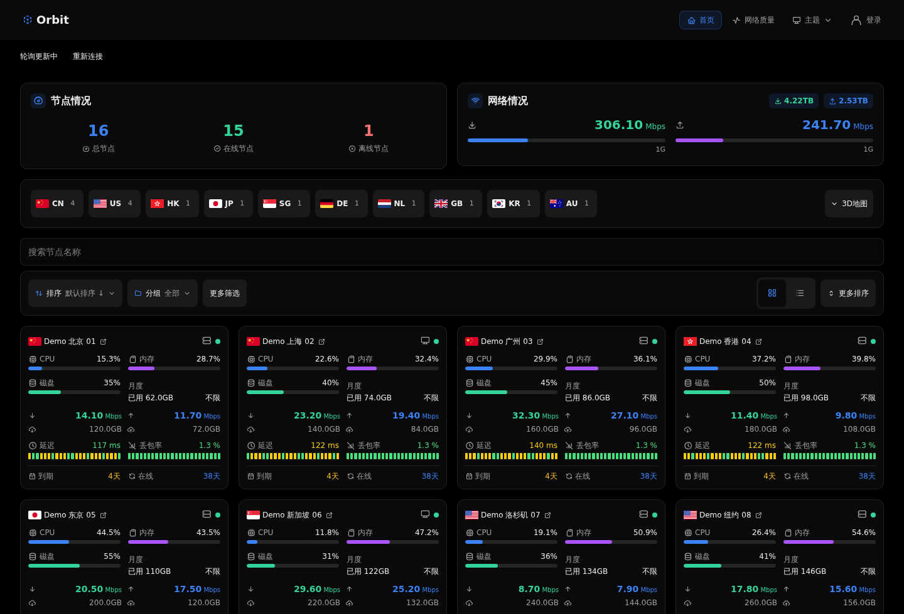

<!doctype html>
<html lang="zh-CN">
<meta charset="utf-8">
<title>Orbit — 主题宣传图</title>
<style>
*{box-sizing:border-box}body{margin:0;background:#070b16;color:#f6f8ff;font-family:Arial,"WenQuanYi Zen Hei",sans-serif}
.poster{position:relative;width:1600px;height:900px;overflow:hidden;background:radial-gradient(ellipse at 80% 22%,#162748 0,transparent 52%),linear-gradient(135deg,#080c18,#080d1b 70%,#102644)}
.grid{position:absolute;inset:0;opacity:.12;background-image:linear-gradient(#5d7ca5 1px,transparent 1px),linear-gradient(90deg,#5d7ca5 1px,transparent 1px);background-size:64px 64px;mask-image:linear-gradient(90deg,transparent,#000)}
.orbit{position:absolute;width:1050px;height:600px;right:-210px;top:-320px;border:1px solid #6c91d765;border-radius:50%;transform:rotate(-28deg)}
.orbit:before,.orbit:after{content:"";position:absolute;border:1px solid #83aaff28;border-radius:50%;inset:-75px}.orbit:after{inset:80px}
.star{position:absolute;top:98px;right:218px;width:10px;height:10px;border-radius:50%;background:#bddcff;box-shadow:0 0 28px 8px #659af86b}
.brand{position:absolute;left:76px;top:68px;display:flex;align-items:center;gap:18px;color:#acbcd8;font-size:17px;letter-spacing:4px}
.brand svg{width:54px;height:54px}.copy{position:absolute;left:76px;top:198px;width:530px}
h1{font-size:144px;line-height:1;margin:0 0 35px;letter-spacing:-7px;font-weight:700}h2{font-size:45px;line-height:1.48;font-weight:500;margin:0;letter-spacing:1px}h2 span{color:#86b8ff}
.intro{font-size:22px;color:#93a3bd;margin:25px 0 40px;line-height:1.7}
.features{display:flex;flex-direction:column;gap:17px;font-size:21px;color:#cad5e8}.features div{display:flex;gap:14px;align-items:center}.features i{width:7px;height:7px;background:#78b4ff;border-radius:50%;box-shadow:0 0 12px #60a5fa66}
.screen{position:absolute;left:670px;top:188px;width:850px;border-radius:20px;overflow:hidden;border:1px solid #aec6ff35;background:#050505;box-shadow:0 32px 90px #0009,0 0 100px #2364c71a;transform:rotate(-2deg)}
.browser{height:38px;display:flex;align-items:center;padding:0 17px;gap:7px;border-bottom:1px solid #ffffff12;background:#101624}.browser b{width:7px;height:7px;border-radius:50%;background:#42516a}.browser span{font-size:11px;color:#8597b6;margin-left:16px;letter-spacing:1.5px}.screen img{display:block;width:100%}
.live{position:absolute;right:95px;top:130px;font-size:14px;letter-spacing:2px;color:#b0c3e1;display:flex;align-items:center;gap:10px}.live i{width:7px;height:7px;border-radius:50%;background:#68e7b2}
.bottom{position:absolute;left:76px;right:76px;bottom:55px;display:flex;justify-content:space-between;align-items:center;border-top:1px solid #b9cfff22;padding-top:24px;color:#8092b1;font-size:15px;letter-spacing:1px}.bottom strong{font-weight:400;color:#c2d4f2;font-size:18px;letter-spacing:3px}
</style>
<main class="poster">
 <div class="grid"></div><div class="orbit"></div><div class="star"></div>
 <div class="brand"><svg viewBox="0 0 64 64" fill="none"><circle cx="32" cy="32" r="13" fill="#8ebaff"/><ellipse cx="32" cy="32" rx="30" ry="12" transform="rotate(-35 32 32)" stroke="#d2e3ff" stroke-width="2"/><circle cx="55" cy="16" r="4" fill="white"/></svg><span>THEME FOR MONITOR</span></div>
 <section class="copy"><h1>Orbit</h1><h2>让每个节点，<br><span>尽在视野。</span></h2><p class="intro">为极简探针打造的状态面板主题</p><div class="features"><div><i></i>实时状态 · 网络质量</div><div><i></i>全球节点 · 3D 地球</div><div><i></i>亮暗外观 · 卡片 / 列表</div></div></section>
 <div class="live"><i></i>YOUR NODES. ONE ORBIT.</div>
 <div class="screen"><div class="browser"><b></b><b></b><b></b><span>ORBIT / OVERVIEW</span></div></div>
 <div class="bottom"><strong>清晰 · 轻盈 · 尽在掌握</strong><span>极简探针主题 / 界面使用演示数据</span></div>
</main>
</html>
